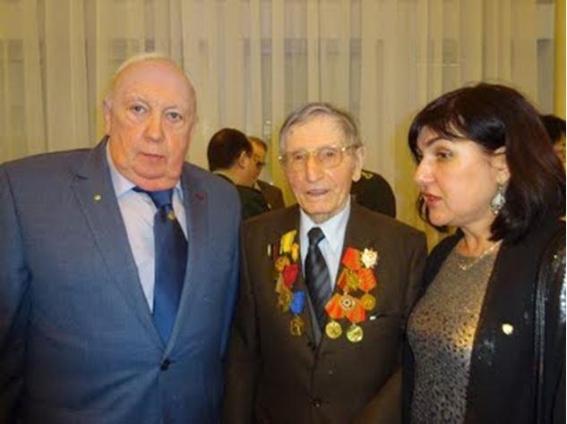
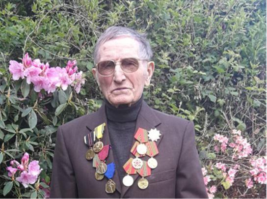
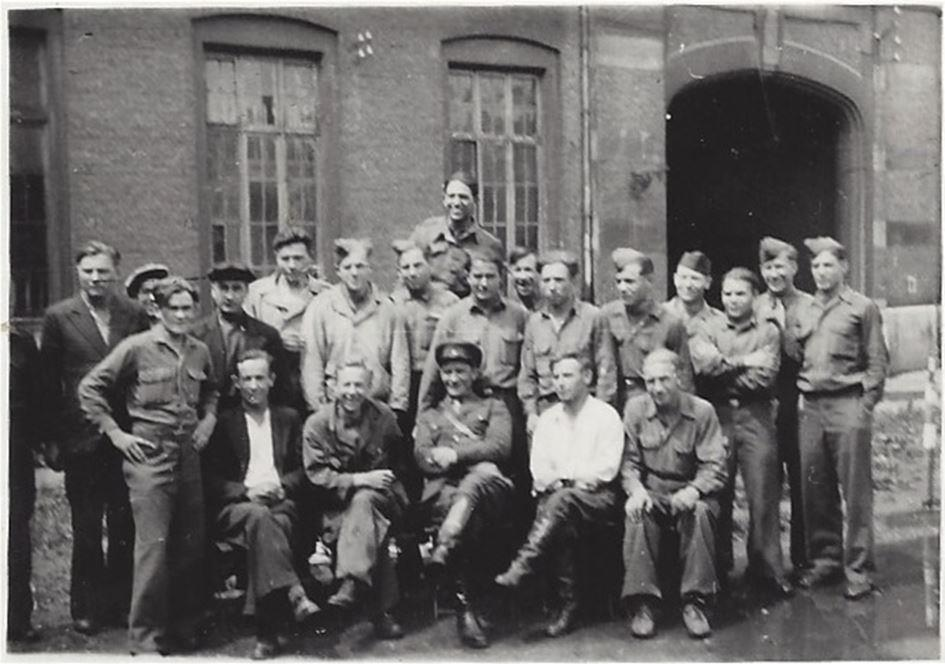
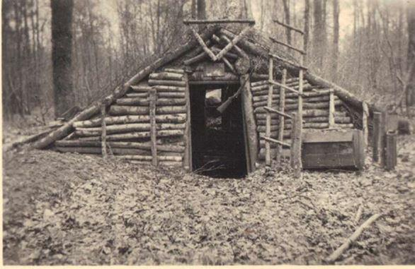
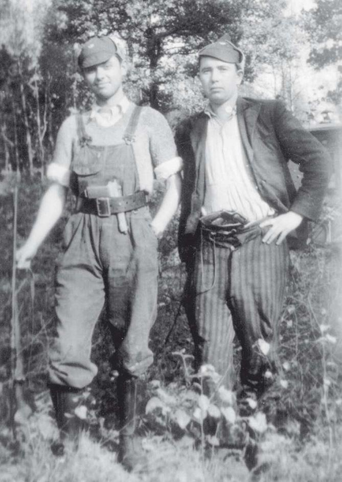
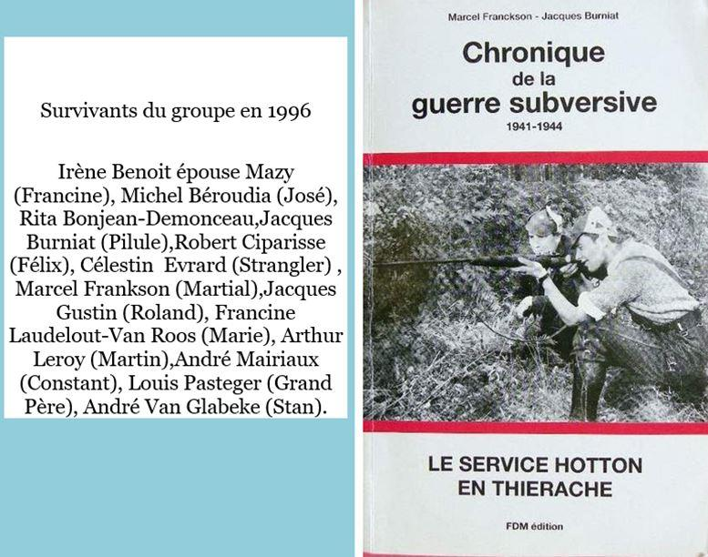
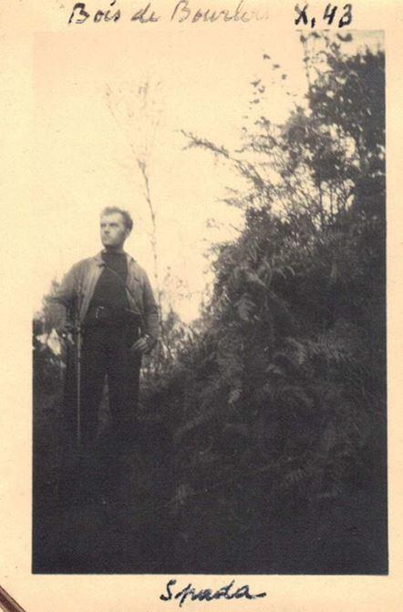
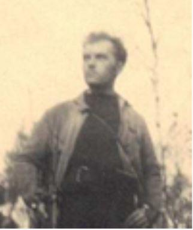
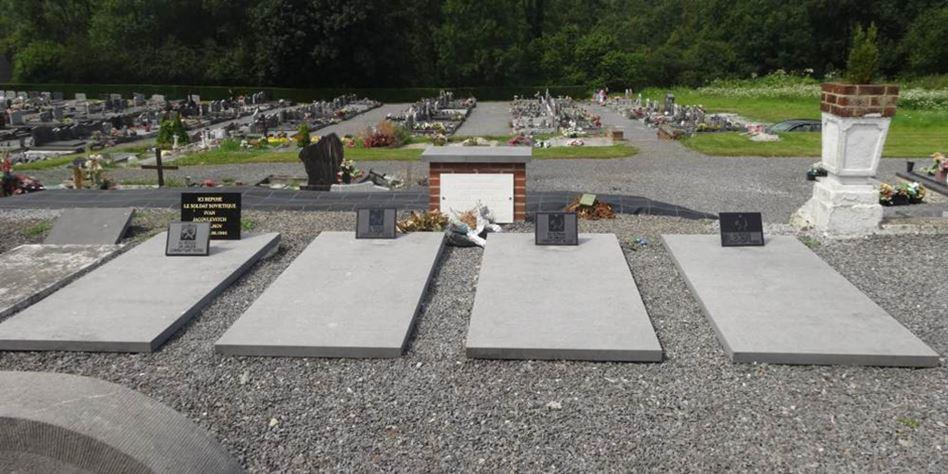
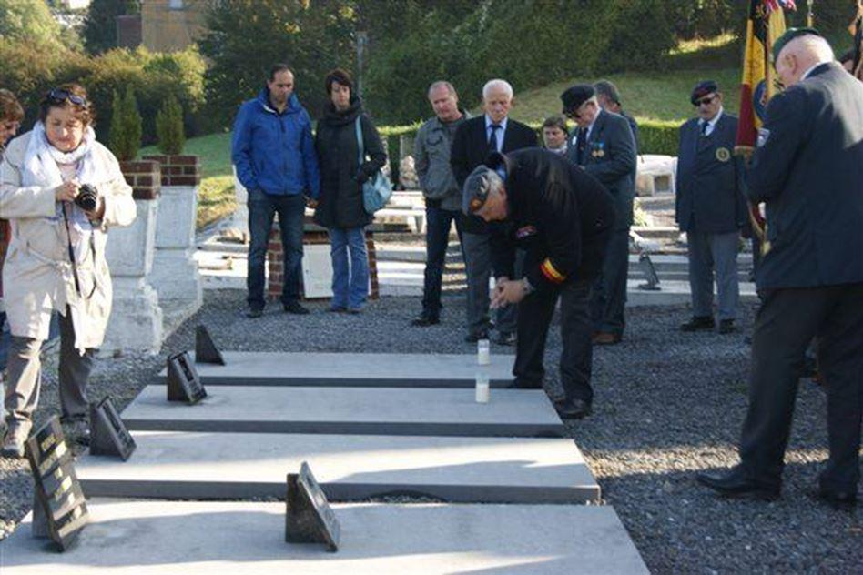

Lorsque l’Allemagne nazie attaque l’Union soviétique en juin 1941, l’Armée Rouge n’est pas préparée à la guerre. Le choc est brutal et le nombre de prisonniers russes important. On estime le nombre de prisonniers assassinés à 600.000 hommes. D’abord envoyés dans des camps de prisonniers qui ressemblent plus à des camps d’extermination (les relations des prisonniers de guerre belges en Allemagne sont édifiantes sur les mauvais traitements subis par les prisonniers russes). Ceux qui survivent aux mauvais traitements des nazis et qui présentent un certain intérêt pour leur industrie de guerre sont envoyés ici et là dans les mines de charbon de la région de Liège ou de Charleroi. Un groupe venant de Charleville rejoindra un refuge dans les Ardennes belges. Comment ont-ils réussi à s’évader et rejoindre la résistance, nous en avons le témoignage du dernier résistant russe encore en vie dans notre Fraternelle de l’Armée secrète section 1 B 30 dont Couvin dépend.
C'est à Pont-à-Celles qu’habite Monsieur Ivan Bachkatov. Il se sent davantage Belge et c’est pourtant en russe, sa langue natale, qu’il raconte son histoire. C'est à l'ambassade de Russie que nous l'avons rencontré. Né en 1921, il est toujours en pleine forme.

Ivan Bachkatov entre Ella Georgievna Bondareva fondatrice de la « Fédération belge des Organisations russophones » et présidente de « Méridian », La Maison russe de Liège et Pierre Uhlrig, à l’ambassade russe en février 2020.
En juin 1941, le jeune lieutenant Ivan Bachkatov fait son service à la frontière entre l’URSS et la Pologne. Les troupes soviétiques reculent devant l’offensive allemande. Dès les premières semaines de combats, le régiment de Bachkatov, manquant de munitions et de renforts, se retrouve encerclé. Blessé, il atterrit dans un camp de concentration en Pologne. Puis il est transféré en 1943 à Charleroi pour travailler dans les mines de charbon. Au total, sur les 5,4 millions de soldats et officiers soviétiques capturés par la Wehrmacht, au moins 3,6 millions périrent (environ 60 %). La situation se dégrada à partir d'octobre 1941 avec l'arrivée du froid et la réduction délibérée des rations alimentaires, en particulier pour ceux qui étaient déclarés inaptes au travail. Les responsables nazis ont délibérément décidé de laisser mourir de faim les prisonniers soviétiques, alors que la situation alimentaire du Reich commençait à devenir délicate.
« Les Belges nous aidaient pour la nourriture, certains prisonniers fabriquaient des objets d’artisanat qu’ils échangeaient contre du pain. Moi, je ciselais des bagues dans des pièces de monnaie, d’autres fabriquaient des petits oiseaux. Cela permettait de tenir. Je me suis senti mieux et j’ai tout de suite pensé à m’évader ».
Pourtant, il était bien loin de sa terre natale de la région d’Orlov : ici, il ne connaissait ni la contrée, ni la langue. « Un ingénieur belge qui était au courant des intentions des prisonniers essayait de les dissuader à cause du danger. Mais, je n’avais qu’une idée en tête : s’évader et se battre contre les Allemands ! ».
Le savoir-faire artisanal a été pour beaucoup dans le plan d’évasion réalisé le 10 septembre 1943. L’un des détenus détourne l’attention des gardiens et permet à quatre autres de faire le mur.
« Les Allemands ont tout de suite tiré mais nous avons eu le temps de nous protéger derrière les murs d’une maison », explique notre résistant. « Ils ont essayé de nous trouver et ont continué la fusillade dans la rue, mais nous avons réussi à nous cacher. Après nous être séparés, nous nous sommes planqués trois jours dans les champs, jusqu’à atteindre les bataillons des résistants belges ».
Onze prisonniers de guerre soviétiques ont été réfugiés à Pont-à-Celles, ville où réside encore Ivan à ce jour. Ces Russes ont apporté leur aide aux réseaux de résistants belges en participant aux actes de diversion et de sabotage, des transports par exemple. Ils ont contribué à la mission de récupération et de distribution des armes parachutées par les Britanniques. Et les charges étaient bien lourdes à porter.
« Ce sont les Belges qui donnaient les ordres. Nous agissions de nuit, par temps de pluie ou de brouillard. Nous étions prêts à tout contre l’ennemi ». Pendant son récit, il ne cesse de souligner l’héroïsme des Belges qui protégeaient les évadés russes. En septembre 1944, les troupes alliées aidées par les résistants ont libéré la Belgique. Ivan, grâce à sa connaissance de la situation locale, aide la Mission militaire soviétique à organiser le rapatriement des soldats russes en URSS. Lorsqu'on lui propose de rentrer dans sa patrie en 1949, il justifie son refus par le fait qu'il vient d'avoir une fille de son épouse belge. Bien lui en prend, car plusieurs prisonniers de guerre soviétiques sont envoyés par Staline dans les goulags. »
Dès 1945, Ivan épouse Marcelle, fille des belges qui l’ont caché pendant son évasion. En 1946 est née sa fille aînée Nina et Bachkatov s’est installé définitivement en Belgique, où il a travaillé comme mécanicien jusqu’à sa retraite.
Ivan Bachkatov a la double nationalité et la reconnaissance des deux pays : le certificat russe de vétéran de la Seconde guerre mondiale ainsi que le certificat belge de Résistance. Des médailles et décorations belges et russes et deux patries dans le cœur.

Soldats russes à Charleroi avant le rapatriement en U.R.S.S. en 1945
Tous les témoignages de résistants russes sont unanimes. C’est grâce à leurs camarades de travail belges qu’ils ont pu quitter leur lieu de travail, plus un lieu de bagne qu’autre chose même s’ils disent tous que les belges les ont toujours aidés. Une fois libérés, ils prennent le train avec la complicité de la résistance et se retrouvent à Chimay où ils sont pris en charge.
Nous avons le témoignage de la façon dont le voyage se passait :
« Le recruteur de Couillet s'est adressé à une dame de Walcourt qui organise l'acheminement des maquisards vers leur lieu de retraite. Cette dame prend contact avec « B14 » chez le recruteur et lui donne les instructions que voici, extraites du rapport que « B14 » adresse à ses chefs :
« Vous prendrez le train de 7 h 20 à Charleroi-sud pour Couvin, je serai à Walcourt avec un prisonnier russe évadé, il portera dans la main comme signe de ralliement, le journal « Der Adler » pour vous ; à Walcourt vous vous mettrez à la portière avec ce journal en main. Le Russe montera dans votre compartiment, mais je vous interdis formellement de lui adresser la parole lorsque vous serez dans le train. Vous descendrez à l'arrêt dénommé « La Forge », à cet endroit vous verrez un jeune homme très mince, petite taille, visage allongé, qui se dirigera vers vous et dira le mot de passe « Walcourt » et vous répondrez « Walcourt ». Alors vous partirez tous trois dans le bois qui vous mènera au maquis de « Le Brûly ». Vous aiderez les camarades à construire une ligne téléphonique souterraine. »
Et la dame de Walcourt d’ajouter : « A l'intérieur du maquis, il existe une police secrète chargée d'abattre les traîtres ! » « B14 » ne pourra pas lui reprocher de n'en avoir pas été prévenu. ». B 14 est un russe passé chez les nazis. Dès son arrivée, il est soumis à un interrogatoire serré. Les maquisards se méfient des traitres qui ,une fois démasqués, sont exécutés sans pitié.
Une fois intégrés, les partisans russes sont appréciés par leurs camarades belges car ce sont de vrais soldats connaissant le maniement des armes, et tous des chefs incontestés, prêts à se sacrifier s’il le faut !
Forts prisés des résistants belges, ils avaient l'art du camouflage. Ils savaient choisir des endroits particulièrement adaptés à la vie de partisans. Ils savaient que les nazis les extermineraient s'ils étaient pris. « Les maquisards avaient beaucoup de respect pour les Russes, qui ont amené la discipline et l’expérience de guerre des camps de travail ».
Comment s’appellent-ils ? Ils ont tous un nom de guerre mais refusent de décliner leur identité. S’ils sont faits prisonniers par les nazis, non seulement ils sont horriblement torturés mais s’ils donnent le moindre renseignement, la hargne allemande va s’abattre sur leur famille ou leur village aux mains des troupes SS en Russie.
Quelques rares noms :
Kouchnirenko Anatole dit Andréï
Schlakov Alexandre dit Sacha
Makamenté Feiga médecin parlant russe mais de nationalité inconnue.
Nous avons quelques relations d’actions entreprises avec les résistants russes. L’attaque de l’hôtel de ville de Couvin avec la participation de Monsieur Emile Guillaume, agent communal prévenu la veille et à qui on a demandé d’ouvrir le coffre-fort pour une heure déterminée. Mais ce que nous retenons, c’est le sacrifice suprême des résistants russes qui se sont sacrifiés pour sauver la vie de leurs camarades.

Andréi identifié pour avoir participé à l’attaque de l’hôtel de ville de Couvin.
24 août 1944 - sur base de dénonciations dont on a jamais retrouvé les dénonciateurs - les troupes allemandes se mettent en position près du maquis provisoire près de Presgaux - Gonrieux. Très rapidement, l'alerte est donnée et devant la masse imposante des Allemands, le chef du groupe demande des volontaires pour permettre aux maquisards de décrocher. Les maquisards russes se portent volontaires. Ils stopperont l'attaque et permettront à leurs camarades de décrocher. Résultat ... 5 morts russes. 4 soldats n'ont pu être identifiés.

Spada dont le nom revient souvent lors des opérations.

Tombes russes au cimetière de Chimay.

Hommage annuel à ces héros
. Respect et Honneur
P.U.
SOURCES
Photos Maison de la Mémoire.
En Fagne et Thiérache – quelques articles dont la rafle de Rièzes et le refuge des premiers arrivés russes.
Chronique de la guerre subversive de Marcel Franckson.
Resistance Couvin site web avec quelques pages consacrées aux partisans russes.
Partager cette page